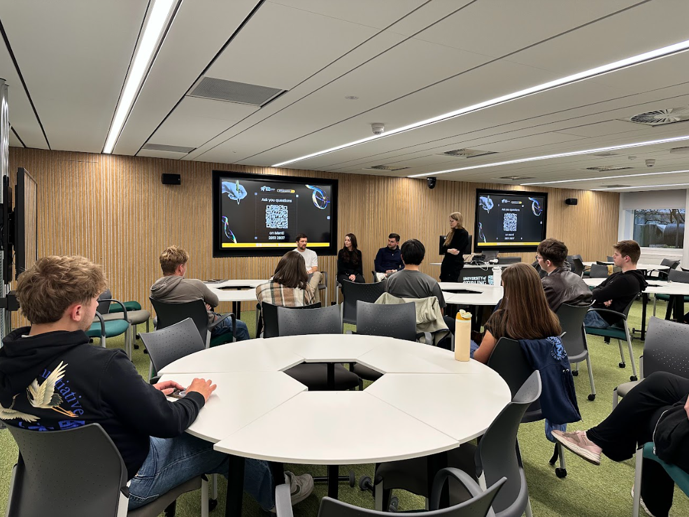
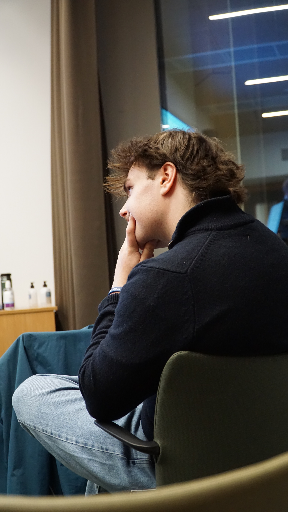

A society for builders.
Stirling Entrepreneurs is a student-led community at the University of Stirling focused on startups, innovation, and entrepreneurial thinking. We help students connect, learn practical skills, and take ideas from “maybe” to “real”.

Our mission
To make entrepreneurship accessible on campus,not just for business students, but for everyone. Whether you’re into tech, design, science, sports, arts, or social impact, entrepreneurial thinking helps you build.
Accessibility
Everyone is welcome. No experience required. Curiosity is enough.
Learning by doing
Workshops and events that create momentum, not just “talking about startups”.
Community
A place to meet co-founders, collaborators, and friends who want to build things.
What members get
Practical frameworks
Pitching, validation, MVPs, storytelling, and how to actually start.
Networking that isn’t awkward
Meet people through activities and workshops, not forced small talk.
Speakers & partners
Access talks and sessions with founders, mentors, and organisations.
Start with workshops and socials. You’ll pick up the basics fast.
Pitch nights + feedback sessions are where you’ll get the most value.
Committee
Meet the team behind Stirling Entrepreneurs. We’re here to build a welcoming, practical community for students who want to create, collaborate, and learn.

President
Sets direction, represents the society, and keeps everything moving forward.

Tech Lead
Builds and maintains our digital presence, from the website to tools that support members.

Partnership Lead
Connects with sponsors, founders, and organisations to unlock opportunities for students.

Community Manager
Welcomes new members, runs socials, and makes sure everyone feels included and supported.

Operations Manager
Handles logistics, scheduling, and smooth delivery, so events run like clockwork.

Media
Creates content, designs promotion, and keeps our socials looking sharp and consistent.